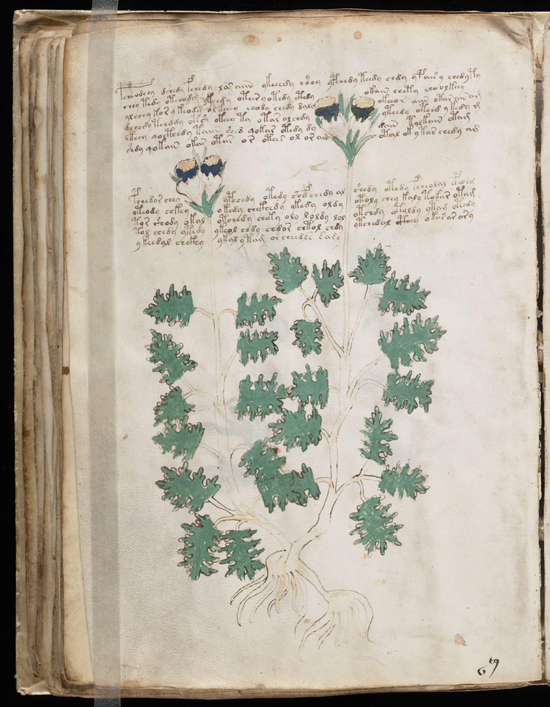

f48v
1pcheodchy dshedy fchedy los aiin ykeeedy shey ypchedy tchdy chdy ypair y chedyty2chey tedy otchody ytchdy otar yotedy cthdyokain chety choolkeey3alchey kor y keody olkchey chody chedy dalyokeeor aiin otar air am4dchedy tchddy otsh okeey ty otar alchdyyteedy oteed y tedy m5lkeey qocthedy taiin shed qokar otedy dydain tolkain otam6shdy qokain okar otar or otees ol or ainotal ok ytar chedy am7pchedar cheyypchedy otedy shefeeedy alshedy otedy fcheodal cphheg8oteody chkeyokedy chckhedy ykedy oldyotoly chey kaly tokar otam9tor shody okalotchedy cheky oly loldy lolotchdy otoldy ytam otedy10tol chedy ytedyykeol chdy chdor chtol chdyytchedal cthey okar ar ary11y keedal chckhyykal ytam or cheedls dary
